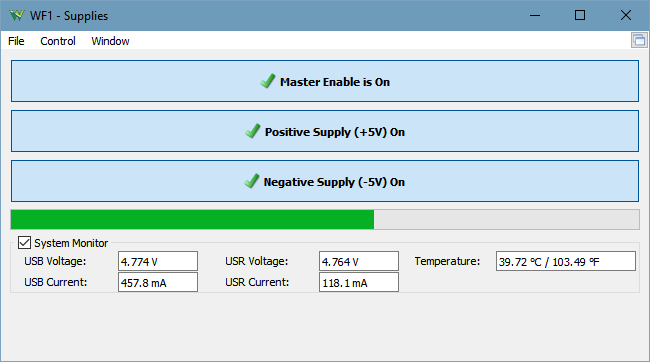

Power Supplies – Analog Discovery
This instrument allows you to enable the device's power supplies. See Power Supplies for more information.

- Master Enable is ON/OFF button: the master ON/OFF switch for the power supplies.
- Positive/Negative Supply button: the enable switches for each supply.
- RDY is shown when the supply is enabled but the master switch is OFF.
- ON is shown when the master switch is on and the supply is also enabled.
- OFF is shown when the supply is not enabled.
- Power progress bar: shows the consumption of the two power supplies, from zero up to the maximum allowed level.
See Menu in Common Interfaces.